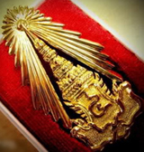
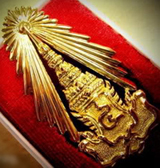
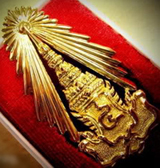
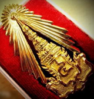

INDIVIDUAL STUDY &
THAI GEOSOCIAL DESIGN
Wat Muang (วัดม่วง จ. อ่างทอง)

 

 



อุโบสถ
ล้อมรอบด้วยกลีบดอกบัวสีชมพูขนาดใหญ่ที่สุดในโลก


วิหารแก้ว
ชั้นล่างเป็นพิพิธภัณฑ์วัตถุมงคล และวัตถุโบราณ เปิดเฉพาะวันเสาร์ - วันอาทิตย์ ๐๙.๐๐ - ๑๗.๐๐ น.
ชั้นบนประดิษฐ์ฐานพระพุทธรูปศักดิ์สิทธิ์เนื้อเงินแท้ องค์แรกและองค์เดียวที่ใหญ่ที่สุดในประเทศไทย
โดยสร้างขึ้น
เพื่อเฉลิมพระเกียรติ ในวโรกาสที่ครองสิริราชสมบัติครบ ๕๐ ปี และมีรูปปั้นเกจิอาจารย์ชื่อดังทั่วประเทศ

ตำหนักพระแม่กวนอิมพันมือ
เป็นตำหนักที่ใหญ่ที่สุดในประเทศไทย เป็นองค์ทองเหลืองหนัก ๒๐ ตัน สูง ๘ เมตร มีความศักดิ์สิทิ์ตามคำขออธิฐาน


หลวงพ่อใหญ่
ระยะเวลาการก่อสร้างรวมประมาณ ๑๖ ปี และวัดหน้าตักองค์พระได้ ๖๓.๕ เมตร ความสูงจากฐานองค์พระ ถึงยอดเกศา วัดได้ ๙๕ เมตร


แดนนรก